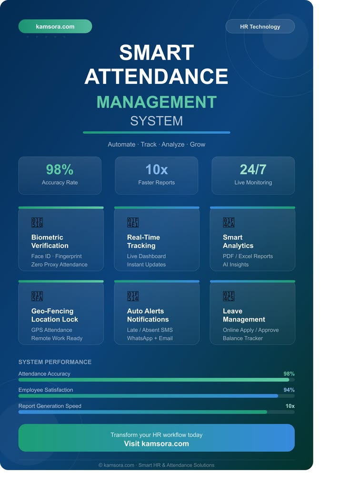
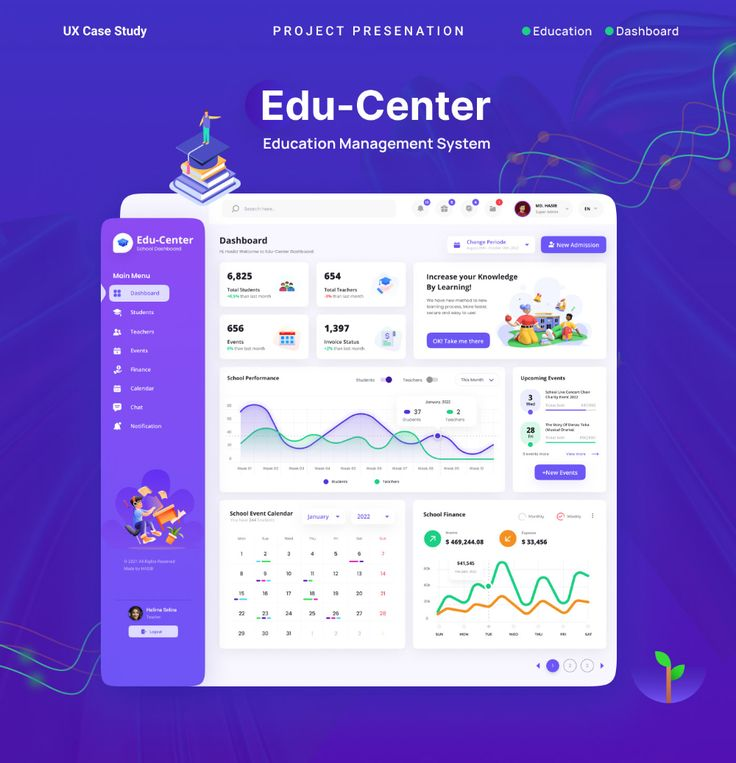

My Projects

Smart Attendance System
A Smart Attendance System that uses QR codes to automate attendance recording and management. The system helps reduce manual work, improve accuracy, and provide a faster way of tracking student attendance while developing my skills in web development and database management.

Student Management System
A Student Management System designed to organize and manage student information efficiently. The system allows users to store, update, and retrieve student records, helping improve data management and reducing the need for manual record keeping. This project strengthened my understanding of database management and system development.